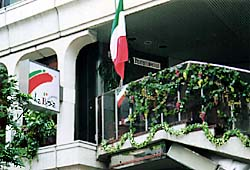
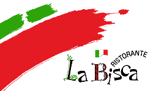
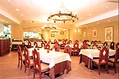
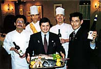
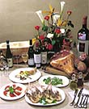
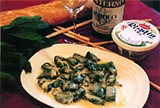

リストランテラ・ビスカ
|  |  |
“ラ・ビスカ”はイタリア語で「集会所」の意味。仲間同士でワイワイと楽しめるお店です。味も本場そのもの。
中江主任からのメッセージ
アントニオという陽気なイタリア人がこの店の総支配人、だから「ラ・ビスカ」の」料理はイタリア人の舌に合わせています。 スタッフたちは、全員イタリア好き、気質もイタリア人のようだから、 楽しくワイワイ！この店に来たらいやな事も全部忘れられます。 料理はメニューにないものでも注文Ｏ.Ｋ. 独自の釜で焼く炭火焼きのお肉は当店の自慢！本場のイタリアンピッツアも自慢！月１回の楽しいイベント（イタリア歌曲のコンサート等）も見逃せません。是非、ラ・ビスカに足を運んでみて下さい。
ドアをあけるともうそこは、本場のイタリア！
INFORMATION
| |||||||||||||||
|
 本場イタリアに来たような店内 |
 総支配人のアントニオはじめ調理スタッフたち |
||||||||||||||
|
|||||||
|
 メニューにないどんなご要望にも ラ・ビスタはお答えできます。 |
 当店の１番人気メニュー ほうれん草のリコッタチーズのニョッキ |
||||||